Siapa memutuskan, kapan, dan bagaimana kami memenangkannya
| Ritel modern premium | HoReCa | B2C kanal langsung | Komunitas | |
|---|---|---|---|---|
| Target | Signature, 17 pintu akhir Tahun 0 | Chef Selection, kontrak 12 bulan, 18 akun akhir Tahun 0 | Weekly, Season Pass, Gift Edition; 2.912 pelanggan baru, 3.303 aktif Tahun 1 | 6 mitra Tahun 1, 10 Tahun 2, 12 mulai Tahun 3 |
| Pemutus | Category manager buah dan sayur, bagian mutu | Executive chef (rasa), purchasing (harga, termin) | Keluarga SES A/A+, pembeli hadiah korporat | Pemilik studio atau ketua klub; instruktur sebagai duta |
| Kapan | Diajukan K3 Tahun 0 setelah PSAT dan panen pertama; keputusan ≤ 14 hari kerja | Uji cicip gelombang 1 K3, gelombang 2 K4 Tahun 0 | Pra-pesan K3 Tahun 0, Weekly K4 Tahun 0, Season Pass K1 Tahun 1 | Pilot satu studio dan lari pagi K4 Tahun 0 |
| Cara menang | Dokumen mutu dan sampel, Uji Manis, materi POS, termin 45 hari | Tasting dinner, volume minimum mingguan, kirim 2–3× per minggu, termin 30 hari | Konten panen, iklan tertarget, Kunjungan Kebun, referral, CRM WhatsApp | 3 aktivasi per mitra per tahun, titik pengambilan di studio |
14 hotel pertama sudah dipetakan dalam dua gelombang
Pasar tersedia dihitung dari 158 pintu yang nyata: 236,9 ton per tahun
| Kanal | Pintu | Serapan (kg/pintu/minggu) | Konservatif (ton) | Moderat (ton) | Optimis (ton) |
|---|---|---|---|---|---|
| Ranch Market / Farmers Market | 48 | 20 / 30 / 40 | 49,9 | 74,9 | 99,8 |
| The Foodhall | 36 | 20 / 30 / 40 | 37,4 | 56,2 | 74,9 |
| Grand Lucky | 12 | 20 / 30 / 40 | 12,5 | 18,7 | 25,0 |
| Kem Chicks, The Gourmet, Pasarina, Total Buah Segar, Papaya | 25 | 20 / 30 / 40 | 26,0 | 39,0 | 52,0 |
| Hotel bintang 5 DKI (11.571 kamar) | 37 | 15 / 25 / 35 | 28,9 | 48,1 | 67,3 |
| Total | 158 | 154,7 | 236,9 | 319,0 |
Survei 253 responden: rasa manis menentukan, dan momen hadiah membuka harga premium
cara membacanya
45,8% bersedia membayar ≥ Rp 100.000 per buah · ≥ Rp 200.000: 16,6% · ≥ Rp 400.000: 9,9%
Pada harga Melooloo Rp 178.200 per buah, estimasi interpolasi sekitar 23% responden masih bersedia.
Survei daring 1 Mei–5 Agustus 2026, belum difokuskan pada SES A/A+; interpretasi mengikuti profil sampel.
Ritel mengonfirmasi masalahnya: rasa sulit ditebak, dan Brix tidak diperiksa di toko
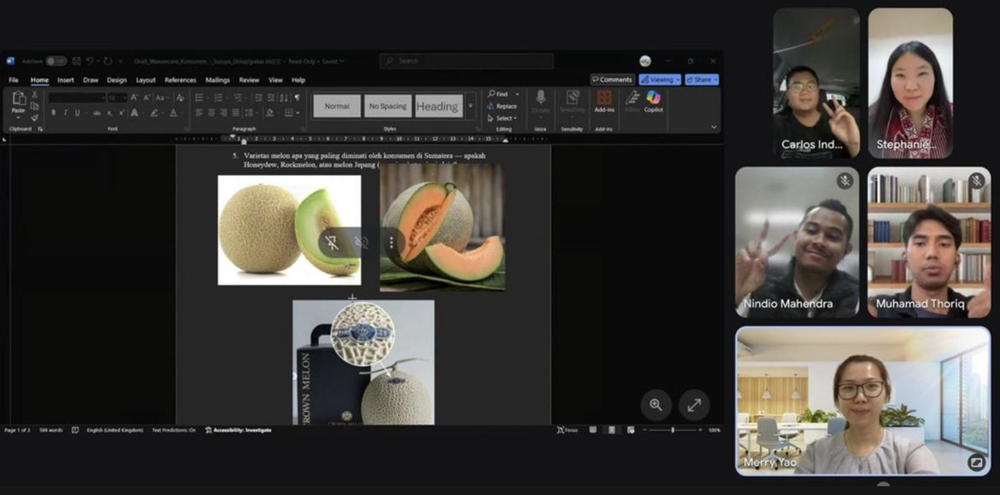
empat temuan
Keluhan utama: rasa sulit ditebak, sehingga melon berpenjualan relatif rendah
Brix tidak diperiksa di toko, menjadi tanggung jawab pemasok
Melon premium dari Jawa tiba ±1 minggu, retur atas biaya pemasok
Melon lokal premium diprioritaskan karena marginnya lebih tinggi dan stoknya lebih stabil dari impor
Pada sampel rak AEON Agustus 2026, Melooloo 38% di atas melon termahal; setara satu boks stroberi Jepang
cara membacanya
+38% dibanding melon termahal di rak AEON
Setara satu boks stroberi Jepang Rp 178.800
±82% harga parsel buah bermerek termurah Rp 217.000
Karena itu Melooloo dijual sebagai pilihan hadiah, bukan pesaing melon rak
Ruang segar dan manis di peta positioning belum ditempati merek mana pun
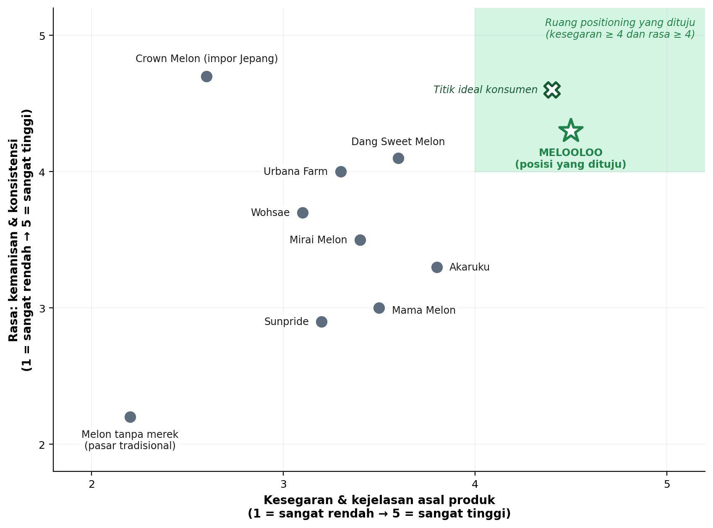
cara membacanya
Crown Melon unggul rasa, lemah kesegaran karena dikirim udara
Dang Sweet Melon dan Urbana Farm dekat pada rasa, tetapi berjarak 90–500 km dan asal per buah tidak dikomunikasikan
Posisi yang dituju Melooloo paling dekat ke titik ideal konsumen
Nama Melooloo hanya dipasang pada buah yang lulus delapan uji mutu
| Atribut | Cara ukur | Ambang lulus | Frekuensi |
|---|---|---|---|
| Kemanisan | Alat Brix genggam tanpa membelah; verifikasi refraktometer pada 2 sampel | ≥ 15 °Brix | Setiap buah (saring); setiap panen per greenhouse (verifikasi) |
| Cita rasa dan aroma | Uji hedonik 9 poin, panel internal dan chef mitra | Rata-rata ≥ 7 | Setiap bulan |
| Rasa vs pembanding | Uji rasa buta panel chef vs melon impor dan lokal, dipublikasikan | Tidak di bawah pembanding lokal | Setiap tahun per kota |
| Tekstur | Penetrometer pada sampel | Dalam rentang target panel | Setiap panen per greenhouse |
| Kematangan | Umur sejak penyerbukan dan visual; jam panen dicatat | Sesuai umur panen varietas | Setiap buah |
| Penampilan | Timbang, skor jaring, bentuk | 1,6–2,0 kg; jaring rata; bulat simetris | Setiap buah |
| Keamanan pangan | Uji multiresidu di laboratorium terakreditasi | Semua di bawah BMR | Setiap siklus per lokasi |
| Konsistensi | Selisih Brix antarsampel dalam satu lot | ≤ 2 °Brix | Setiap lot |
Setiap kanal punya peran, margin, dan termin yang jelas
| Kanal | Peran | Harga, margin kotor | Termin, biaya perantara | % volume Grade A gabungan kota pada Th10 |
|---|---|---|---|---|
| HoReCa | Validasi mutu oleh chef, volume stabil | Rp 75.000/kg, ±62% | 30 hari, tanpa perantara | Th125,5 Th515,0 Th1023,7 |
| Ritel modern premium | Visibilitas rak dan volume | Rp 75.000/kg, ±62% | 45 hari; margin peritel diasumsikan 25–30% | Th129,8 Th517,5 Th1018,3 |
| E-grocery | Jangkauan konsumen daring | Rp 75.000/kg, ±62% | 30 hari | Th112,7 Th57,5 Th105,8 |
| B2C kanal langsung | Hubungan langsung, margin tertinggi | Setara Rp 99.000/kg, ±71% | Ongkos kirim ±Rp 15.000 per kiriman ditanggung Melooloo | Th124,0 Th545,0 Th1039,2 |
| Official store lokapasar | Penemuan merek, pembelian hadiah | Gift Edition Rp 535.000/box, Season Pass | Biaya layanan hingga 10%, belum dimodelkan | Th18,0 Th515,0 Th1013,1 |
Anggaran Tahun 1 Rp 768 juta disusun dari aktivitas, bukan dari persen pendapatan
cara membacanya
21% untuk akuisisi B2C berbayar (iklan dan Uji Manis, Rp 158 juta)
24% untuk komunitas dan Kunjungan Kebun (Rp 181 juta)
18% untuk akun B2B (Rp 136 juta)
Sisanya konten, CRM, PR, bukti premium, dan riset
Komunitas dan Kunjungan Kebun lebih mahal per pelanggan di Tahun 1, tetapi sekaligus menjadi bukti mutu
cara membacanya
800 pelanggan baru dari dua program, ±27% pelanggan baru Tahun 1
Pelanggan dari rekomendasi dan komunitas cenderung lebih loyal
Tiket Rp 250.000 (termasuk satu buah) tidak dicatat sebagai pendapatan
Anggaran kumulatif Y0–Y10 Rp 25,3 miliar, naik hanya saat membuka lokasi atau kota baru
cara membacanya
5,4–10,3% pendapatan Tahun 1–10
Hanya Rp 387 juta (1,6%) di atas pagu persen pendapatan
Di bawah rata-rata Gartner 7,7% sejak Tahun 3
Sejak Tahun 3, setiap Rp 1 pemasaran disertai Rp 9–11 kontribusi pemasaran bersih
cara membacanya
MROI turun di tahun peluncuran kota (928% Th6, 923% Th9) lalu pulih ke 1.110% di Th10
NMC kumulatif Rp 245.909 juta
Semua aktivitas pemasaran Tahun 0–1 mengikuti jadwal panen
Biaya lokapasar belum masuk model, dan kami menyampaikannya terbuka
Surabaya dan Bali cukup besar untuk mereplikasi model Jakarta
Lima lapisan pesaing, dan riset tim belum mengidentifikasi produsen premium greenhouse di DKI
| Crown Melon | Greenhouse luar kota dan pinggiran | Melooloo | |
|---|---|---|---|
| Kesegaran | berhari-hari | 1–2 hari | < 24 jam |
| Transparansi | asal sebatas negara | label | kebun dapat dikunjungi |
| Dampak lingkungan | tinggi (udara) | sedang (truk jarak jauh) | jarak distribusi lebih pendek (hipotesis) |
Playbook Jakarta direplikasi ke Surabaya (Tahun 6) dan Bali (Tahun 9), dengan gerbang kinerja
| Surabaya Raya | Bali | |
|---|---|---|
| Bauran B2B | Ritel 50%, HoReCa 35%, e-grocery 15% | HoReCa 70%, ritel 25%, e-grocery 5% |
| Akun tahun pertama (HoReCa / ritel) | 12 / 14 | 46 / 14 |
| Pelanggan B2C aktif tahun pertama | 1.405 | 1.440 |
| Anggaran pra-peluncuran / tahun pertama | Rp 150 juta / Rp 791 juta | Rp 173 juta / Rp 1.263 juta |
| SOM Tahun 10 | 223 ton (16,8–25,1% SAM) | 179 ton (48–55% SAM) |
KPI pemasaran yang akan kami laporkan di Tahun 1, 5, dan 10
| KPI | Tahun 1 | Tahun 5 | Tahun 10 |
|---|---|---|---|
| Pendapatan (Rp juta) | 7.443 | 32.256 | 86.605 |
| Pintu ritel / akun HoReCa aktif | 17 / 17 | 35 / 36 | 88 / 136 (3 kota) |
| Porsi B2C dari Grade A Jakarta | 32% | 60% | 70% |
| Pelanggan B2C aktif | 3.303 | 10.909 | 23.113 |
| Retensi B2C tahunan (Jakarta) | 35% | 58% | 60% |
| Retensi B2B | 70% | 90% | 90% |
| Aided awareness SES A/A+ Jabodetabek | 10% | 40% | 50% |
| CAC iklan berbayar | Rp 75.000 | maks Rp 40.000 | maks Rp 51.000 (tertimbang) |
| Customer Satisfaction Index | min 80 | min 90 | min 90 |
| Buah lulus Standar Mutu | ≥ 85% | ≥ 90% | — |
Perbandingan model: kontribusi per pelanggan aktif sekitar 5× biaya akuisisi per pelanggan baru hitungan tim
cara menghitungnya
Rp 2.708 juta pendapatan B2C Tahun 1 ÷ 3.303 pelanggan aktif = ±Rp 820.000
× margin kotor B2C ±71% = ±Rp 582.000
(Rp 158 juta kanal berbayar + Rp 66 juta komunitas + Rp 115 juta Kunjungan Kebun) ÷ 2.912 pelanggan baru = ±Rp 116.000
Apa yang setara, apa yang membedakan, dan berapa lama pesaing bisa menyamainya
Mudah · 0–12 bulan
benih, greenhouse dan sensor (±Rp 145 juta per unit), alat ukur Brix, kemasan, QRSedang · 1–3 tahun
konsistensi mutu, rekam sertifikasi, kontrak hotel dan ritel, tim agronomisSulit · > 3 tahun
sewa rooftop 5–10 tahun, protokol dan data kalibrasi, ritual merek, jaringan komunitas, pelanggan Weekly dan Season PassPerjalanan pelanggan B2C dan hotel, dari kenal sampai berlangganan
Tiga pembeli B2B dan empat kelompok B2C, dengan target utama yang jelas
Dua risiko pemasaran bertingkat tinggi, dan mitigasinya sudah ada di rencana
| Kode | Risiko | P × D | Mitigasi di paper |
|---|---|---|---|
| R1 | Brand baru belum dikenal pasar premium | Sedang × besar = tinggi | Program bukti premium (label per buah, uji pihak ketiga dipublikasikan, garansi Janji Manis) · 6 mitra komunitas Y1 (target 12 mulai Y3) dan Kunjungan Kebun · kolaborasi chef · anggaran bottom-up 10,3% pendapatan Y1; sekitar 5–6% pada tahun berikutnya |
| R2 | Penolakan pasar B2C terhadap harga Rp 99.000/kg | Sedang × besar = tinggi | Tanpa diskon Grade A · Uji Manis, Kunjungan Kebun, acara komunitas · garansi Janji Manis · Season Pass · Gift Edition korporat · B2B tetap jangkar volume (Jakarta 40% di Tahun 5) |
| R3 | Kompetitor smart greenhouse bermodal besar | Sedang × sedang = sedang | Ketertelusuran IoT sebagai pembeda · kontrak offtaker dengan ritel premium · retensi agronomis kunci |
| R4 | Permintaan tidak sesuai forecast | Sedang × sedang = sedang | Kontrak pra-jual akun B2B · daftar pra-pesan kota baru (Surabaya Tahun 5, Bali Tahun 8) · kontrak HoReCa Bali sebelum tanam · gerbang KPI akhir Tahun 1 |
| R5 | Keterlambatan penagihan B2B (DSO 40 hari), dari tabel risiko keuangan | Sedang × besar = tinggi | SOP penagihan dengan pengingat otomatis · batas kredit per outlet · penyisihan piutang 1% pendapatan B2B · invoice financing siaga |
Lima kanal direncanakan dengan peran berbeda: B2B untuk volume, langsung untuk margin
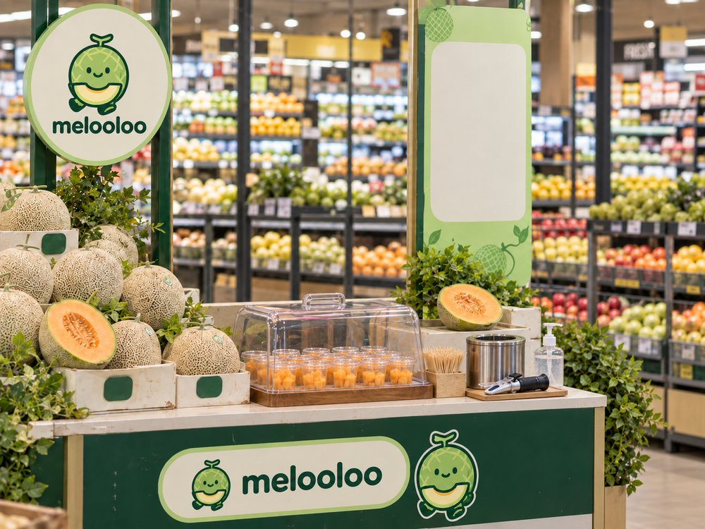
Ilustrasi oleh tim MeloolooRitel modern premium
Signature di rak khusus · Rp 75.000/kg ke mitra · kartu jam panen dan Uji Manis akhir pekan
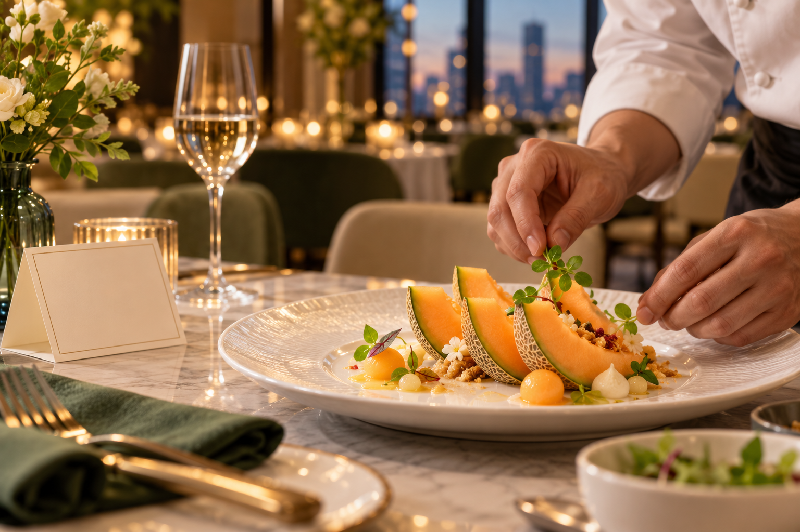
Ilustrasi konsep · bukan mitra aktifHotel dan fine dining
Chef Selection, kontrak 12 bulan · Rp 75.000/kg · asal Melooloo tertulis di menu penutup
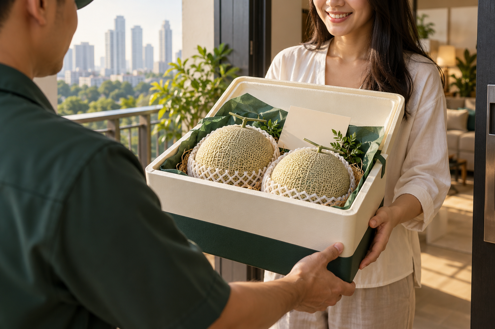
Ilustrasi konsep · layanan rencanaKanal langsung (situs Melooloo.id dan WhatsApp)
Weekly, Season Pass, Gift Edition · setara Rp 99.000/kg · dikirim pada hari panen
E-grocery
Signature · Rp 75.000/kg · restock harian, data stok terhubung
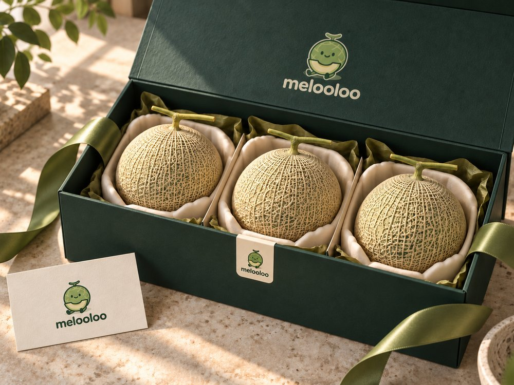
Official store lokapasar
Gift Edition dan Season Pass, tanpa buah satuan
Rancangan situs Melooloo.id: katalog dan pelacakan ke kebun serta jam panen
Dipanen pagi ini, di Jakarta.
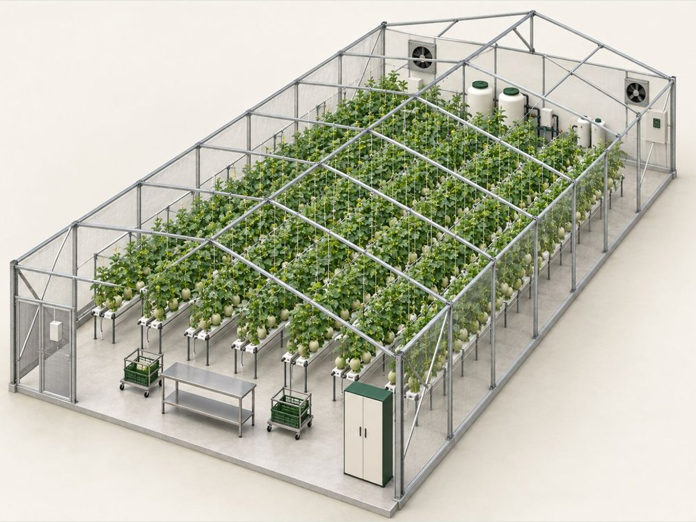
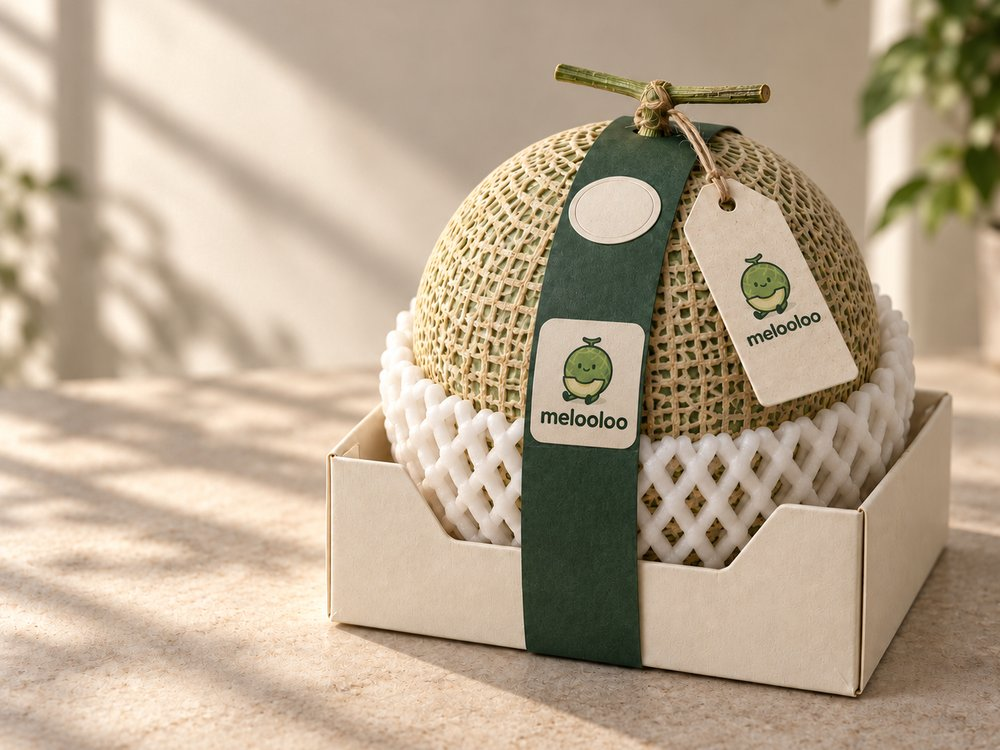
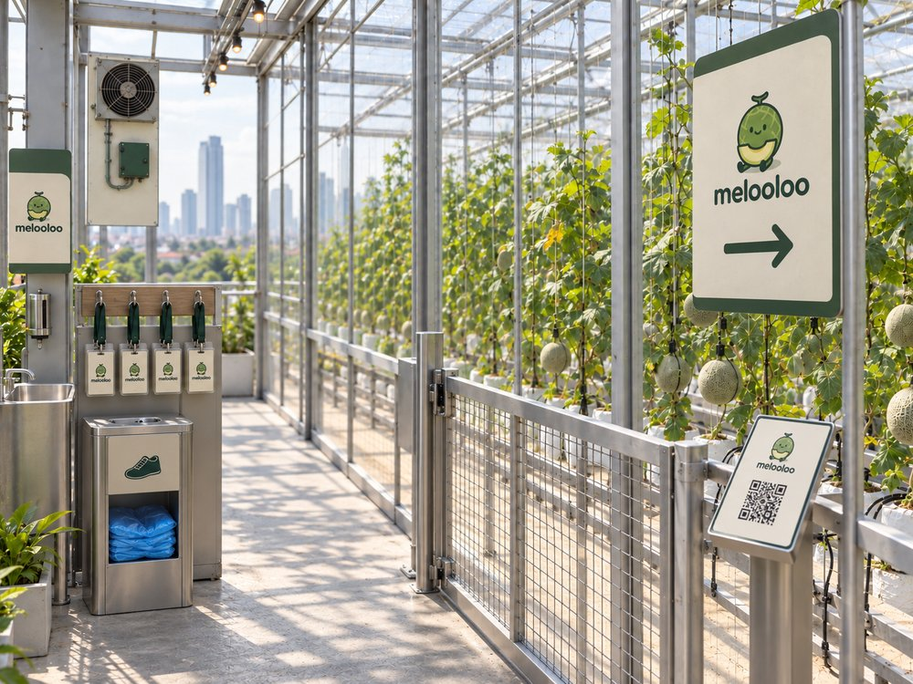
Melon sudah lama menjadi hadiah bergengsi di Jepang, dan minat hadiah dan penawaran premium terlihat di Jakarta
Program komunitas: enam langkah dari studio mitra ke pelanggan langganan, dengan gerbang di akhir Tahun 1
Pilih mitra
Studio pilates dan yoga, klub lari, padel di Jakarta Selatan dan Pusat, dekat greenhouse
Instruktur jadi duta
Pemutus: pemilik studio atau ketua klub. Instruktur atau pelatih merekomendasikan Melooloo
Aktivasi
Buah untuk kelas setelah latihan · acara lari pagi dari kebun · booth lomba lari mulai Th3
Daftar langganan
Anggota mendaftar Weekly atau Season Pass lewat situs dan WhatsApp
Ambil di studio, ajak teman
Studio mitra menjadi titik pengambilan Weekly dan Season Pass · kredit referral Rp 50.000 dalam bentuk buah
Gerbang akhir Tahun 1
≥ 800 pelanggan baru dari komunitas dan Kunjungan Kebun, retensi 35%
tambah mitra
dialihkan ke kanal berbayar
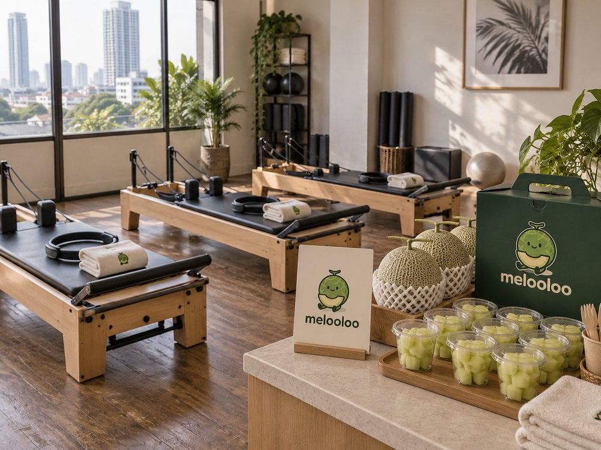
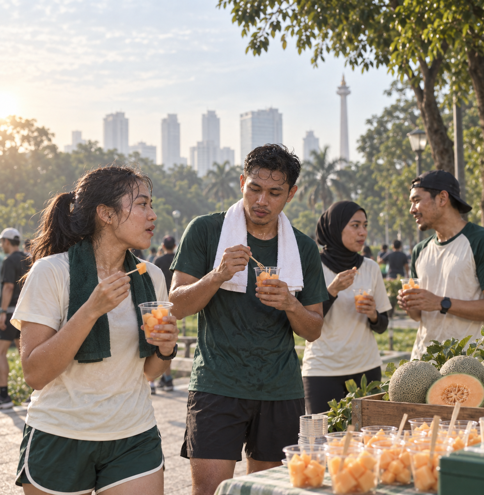
Ilustrasi oleh tim Melooloo · program rencana